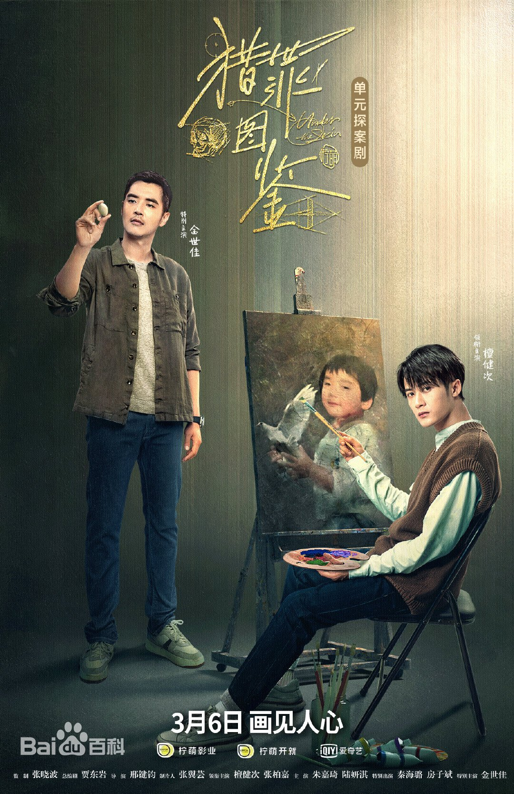
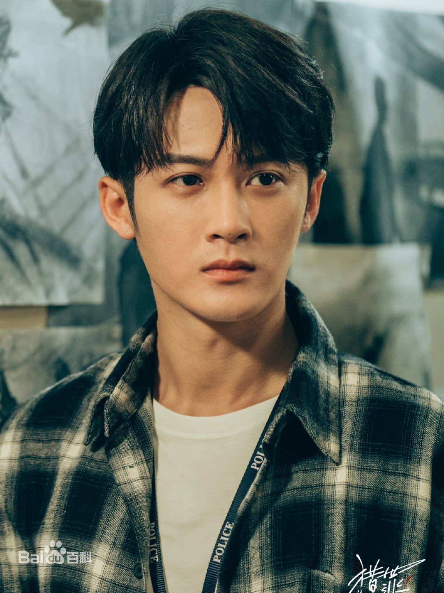
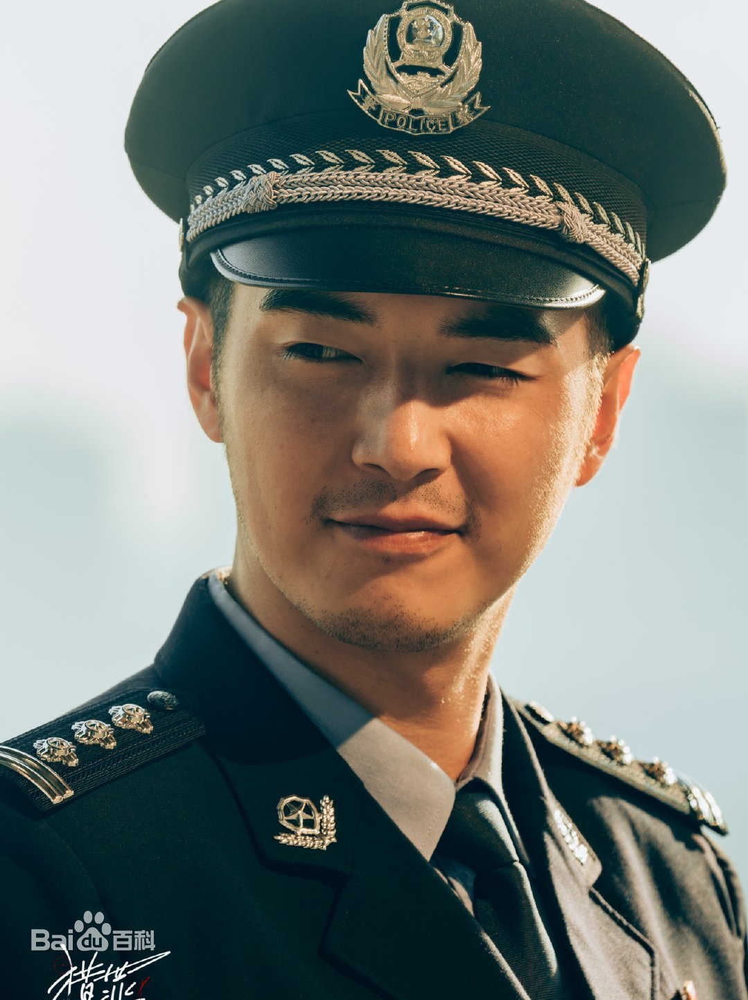
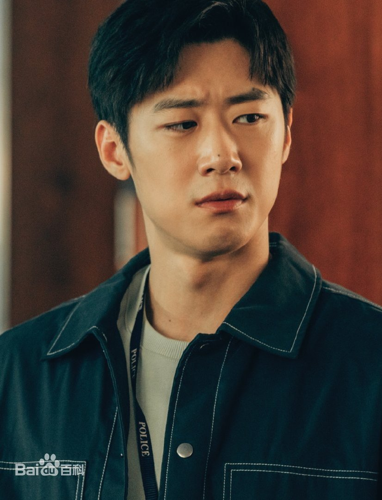
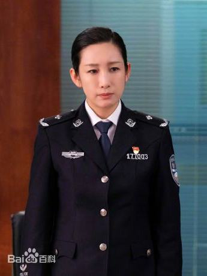
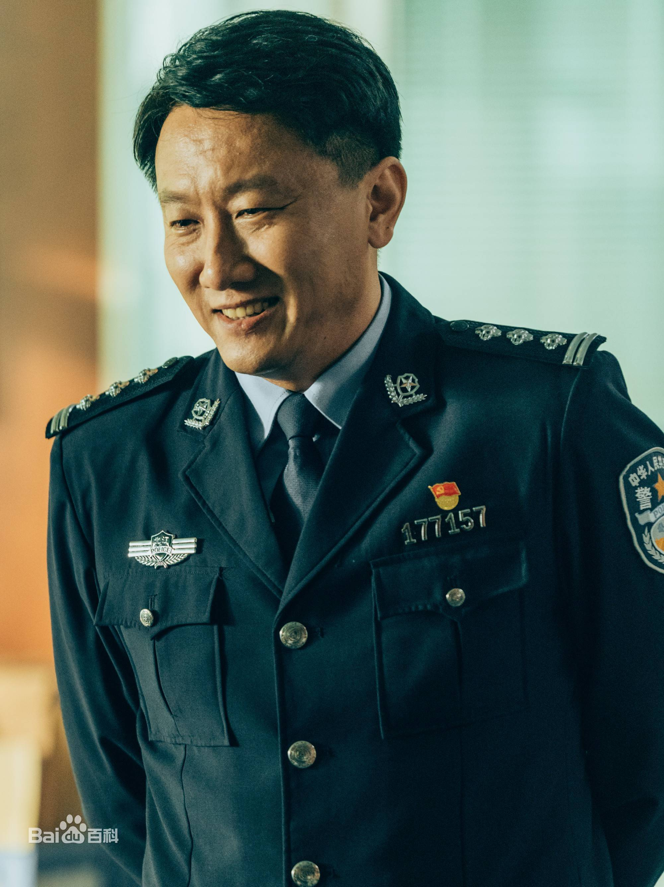

猎罪图鉴
导演:
邢键钧
编剧:
贾东岩/武瑶/张晗/张帆/张敏/刘伊菲
主演:
檀健次/金世佳/张柏嘉/朱嘉琦/陆妍淇
类型:
悬疑/犯罪
地区:
中国大陆
年份:
2022
简介:
该剧讲述了因一起尘封旧案而结怨的模拟画像师沈翊和刑警队长杜城，在机缘巧合下被迫搭档，两人联手侦破多起离奇疑案，共同追踪谜底真相的故事。
剧情简介
沈翊（檀健次饰）初加入北江分局刑侦支队担任模拟画像师，便被领导安排与刑警队长杜城（金世佳饰）搭档办案。杜城起初的几番挑衅奠定两人宿怨的关系前史，随着后续剧情发展，两人的密切配合又将人物关系的对峙感推向了高潮。紧凑的剧情，闪现的画像，扑朔迷离的案件线索，宛如诉说着一个个被掩盖的真相和不为人知的故事。
角色介绍

沈翊
演员 檀健次
青年画家，辞去美术学院教职，带着一身谜团空降海城公安局。七年前， 他还是学生在街头写生，一个陌生人拿着一张孩童照片，请他画出孩子成年的样貌，然而这一幅画，却导致海城刑警雷一斐暴露卧底身份被杀。五年后，负罪感愈加沉重，为了找出真相，他接受公安张局长的邀请，成为了刑警队画像师。

杜城
演员 金世佳
北江分局刑警队长，雷厉风行，常常完全不按常理出牌，为了办案完全不顾一切。他对于沈翊加入警队，决不接受害死战友的人成为警队一员。在张局的劝诫和安排下，他不得不接受和沈翊成为同事，但他仍然充满介怀，对沈翊的“画像破案”更是嗤之以鼻，在他看来，“天眼”遍布的时代，画像破案已经落伍。

蒋峰
演员 朱嘉琦
北江分局刑警队队员，杜城的下属小跟班。他心直口快，虽然没有什么坏心眼，但是经常因为说话口无遮拦，造成误会。他非常仗义，是杜城最信任的下属之一。他喜欢刑警队里的同事李晗，而在李晗眼中只是普通同事。
何溶月
演员 张柏嘉
北江分局刑警队员，是一个正直果敢，专业技能非常强的女法医。她胆大心细，在调查的时候，总是会察觉一些不易发现的真相。她协助杜城和沈翊发现了很多细节，也查出了许多很难破解的案件。她对人体的结构特别的了解，为破案做出了很多的贡献。她一直都很欣赏沈翊，平时在办理案件的时候，有意无意也会看向沈翊。

张局长
演员 秦海璐
北江分局警察局局长，是一位和蔼可亲的警察。她既有身为警察的责任又有好领导的随和，也有作为领导的威严。她调沈翊到局里，借其出色的画功来协助警方办案。

闫谈声
演员 房子斌
北江分局刑警队刑警，一副保温杯里泡枸杞的老干部。他专业素养很高，是个有经验的老警察。他严谨，对待工作也特别认真，非常有正义感，并且满满的正能量。见到新人入队时，也会给予各种帮助。 他是七年前，审问沈翊的预审。当他在警局再遇到沈翊时，沈翊不是靠着记忆想起对方是谁的，而是通过茶杯来推断他是七年前的预审。
精彩评论
大智若愚
我以为，笛卡尔之于张东升，正如透纳之于沈翊。对，就是20集沈翊提到的用一个红点赢得比试的透纳。那年代，画家往往死后才能出名。但透纳不是。
我是来搞笑的
当刑侦剧看的话，推理部分不够精彩，但如果把它作为一个画像师的职业写照来看，完成度还不错。说说其他的，这部剧对女性观众非常友好，完全从女性角度出发，关注女性的困境。说实话，在国产剧里是很少见的，尤其是去表现女性的反抗是很难得的。
不是昭君
最近，一部大尺度犯罪悬疑剧火了，作为2022年突然杀出的一匹黑马，该剧剧情涉及家暴、性侵、操场埋尸……且每一起案子，都能在以往的新闻中找到原型。它就是——《猎罪图鉴》
码雅
很喜欢这部剧呈现出来的职业人的职业“病”细节。这里的“病”特指每个认真工作的人，都会有的自己的职业小习惯。这部剧在沈翊这个角色上有特别呈现，他每次进到一个场，都会首先去看环境中的画。因为他是学美术的，这几乎是一种自然反应了。但是这种行为习惯是警队其他人不会有的。而且好几次都是他从画中看出了线索的蛛丝马迹。对于刻画这样一个职业画像师形象，导演的镜头语言是很用心的。
点击查看更多